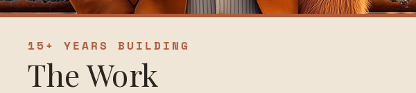
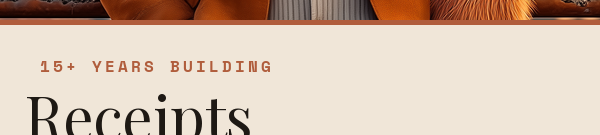
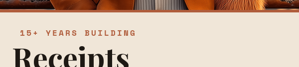
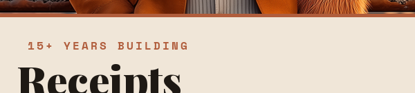
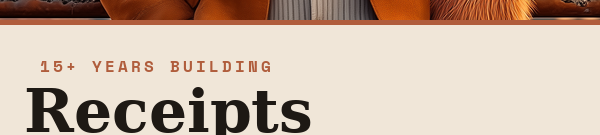
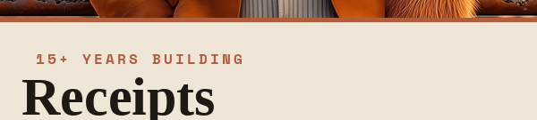

OG Title Font Comparison — pick the closest match
Original "The Work" at top (green border). Below it: "Receipts" rendered at multiple weights / fonts. Compare visually and tell me which row matches the original best.
ORIGINAL target
"The Work" as currently shipped

Playfair Display @ 400
Regular weight

Playfair Display @ 500
Medium weight
Playfair Display @ 600
SemiBold weight
Playfair Display @ 700
Bold weight

Playfair Display @ 800
ExtraBold weight
Playfair Display @ 900
Black weight

DejaVu Serif Bold
first attempt — too heavy

Liberation Serif Bold
alternative — narrower

Lora Variable (default)
previous attempt
Two paths forward:
(1) Tell me which row above looks closest to the original and I'll lock that font/weight in.
(2) If none of these match cleanly, tell me what font the original was actually made in (if you remember from the design pass) and I'll download it. Common possibilities: Cormorant, EB Garamond, Source Serif 4, Crimson Pro, Cardo, Spectral, Recoleta. Or — if there's no clean match available and "close enough" is unacceptable, the honest answer is the OG cards need to be regenerated in the original design tool (Figma/Photoshop) where the font was actually used.